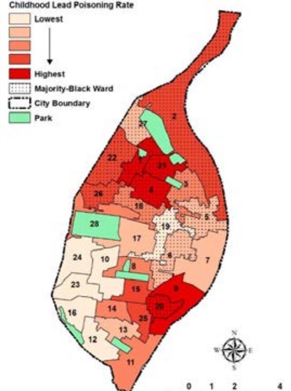

90% of the homes in St. Louis City were built before 1980, which was before lead paint was banned in 1978. Because of this, many homes still have lead paint in them, which is why St. Louis has such high levels of childhood lead poisoning. A child can get lead poisoning when lead paint in their home becomes dust and ends up on their hands, toys, and other objects they might put in their mouths.
/lead-poisoning-causes-51-5aec963d119fa8003761b994.png)
However, there is a large disparity between lead poisoning rates in black communities and lead poisoning rates in white communities, as many majority-white wards with high-percentage of pre-1980 homes have very low lead poisoning rates, while majority-black wards with high-percentage of pre-1980 homes have very high lead poisoning rates. For example, in 2017, less than 2% of children in majority-white wards had lead poisoning compared to over 10% of children in majority-white wards.
Therefore, building maintenance and other unsafe housing conditions are more likely to be the cause of lead poisoning disparities than building age itself. More minority neighborhoods face unsafe housing conditions because suburban development and racial segregation after World War II kept minority families in low-quality urban housing and out of suburban neighborhoods.
Can cause:
Below is a map that shows which areas of St. Louis have the lowest (mostly majority-white wards) and highest (mostly majority-black wards) childhood lead poisoning rates.
